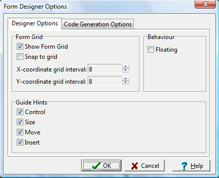

Some basic settings for the wxWidgets
form designer can be set through the Tools menu
and selecting Designer Options.

Grid Settings
In the first box, the grid settings can
be modified:
Show Form Grid - Toggle grid on/off
Snap to Grid - Components will be aligned to the nearest
grid point
X-, Y-coordinate grid interval - The spacing used between
grid ticks
Behaviour Settings
In the second box, the visual designer can be set to "floating". When
this box is checked, the visual designer window(s) will be undocked
from the IDE. Floating makes it easier to manage large windows. For example, in the image below, the two designer forms (left) are floating
independently of the wxDev-C++ IDE (right).